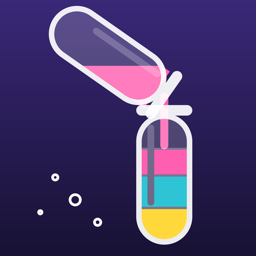

Pourkin
Renkli su sıralama bulmacası · Colour water sort puzzle
Türkçe: Pourkin, renkli sıvıları şişeler arasında döküp her şişede tek renk bıraktığın sakin bir bulmaca oyunudur.
English: Pourkin is a relaxing puzzle game: pour colourful liquids between bottles until every bottle holds a single colour.